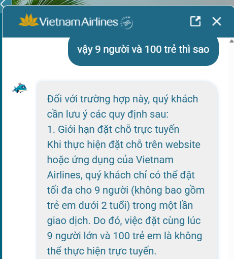

Phân tích lỗi suy luận (Reasoning Failure) của chatbot Vietnam Airlines
1. Thông tin sản phẩm
Sản phẩm: Vietnam Airlines NEO
AI Feature: Chatbot hỗ trợ khách hàng
Case: Lỗi suy luận logic
2. Promise vs Reality
Promise: Trả lời chính sách hàng không chính xác.
Kỳ vọng: Trích dẫn đúng và suy luận đúng.
Điểm tốt:
Bot truy xuất đúng quy định: "tối đa 9 người, không bao gồm trẻ em dưới 2 tuổi".
Điểm gãy:
Bot đưa ra kết luận mâu thuẫn với chính quy định vừa trích dẫn.
3. Evidence

User hỏi:
"Vậy 9 người và 100 trẻ thì sao?"
Quan sát:
Chatbot trả lời:
"Quý khách chỉ có thể đặt tối đa cho 9 người
(không bao gồm trẻ em dưới 2 tuổi)"
"Do đó, việc đặt cùng lúc 9 người lớn và
100 trẻ em là không thể thực hiện trực tuyến"
Kết luận cuối không được suy ra từ tiền đề phía trên.
Nếu trẻ em dưới 2 tuổi không nằm trong giới hạn 9 người
thì chatbot cần giải thích thêm lý do khác thay vì kết luận
trực tiếp như vậy.
4. Four Paths Analysis
Path
Quan sát
Happy Path
Bot tìm được đúng policy.
Low Confidence
Không hỏi lại mà tự suy luận.
Failure
Kết luận mâu thuẫn với policy.
Correction
Không thấy cơ chế kiểm tra nhất quán.
5. Findings & Recommendations
Finding #1 — Logical Reasoning Failure
Chatbot hiểu đúng dữ liệu nhưng áp dụng sai dữ liệu vào tình huống cụ thể.
Đây là lỗi reasoning chứ không phải lỗi retrieval.
Đề xuất:
Thêm Consistency Check trước khi trả lời.
So sánh kết luận với policy nguồn.
Áp dụng validation rule cho các điều kiện ngoại lệ.
6. As-Is vs To-Be
❌ As-Is
User hỏi trường hợp đặc biệt
⬇
Bot lấy đúng policy
⬇
Bot suy luận sai
⬇
Kết luận mâu thuẫn
✅ To-Be
User hỏi trường hợp đặc biệt
⬇
Bot lấy policy
⬇
Consistency Check
⬇
Trả lời nhất quán
7. Kết luận
Vietnam Airlines NEO cho thấy khả năng truy xuất đúng chính sách nhưng vẫn tồn tại lỗi suy luận.
Nguy cơ lớn nhất là chatbot trả lời rất tự tin dù kết luận không phù hợp với chính thông tin mà nó vừa viện dẫn.